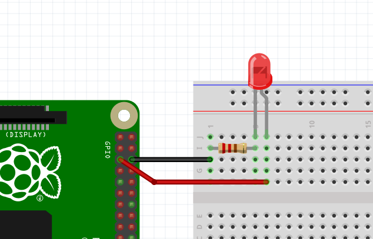
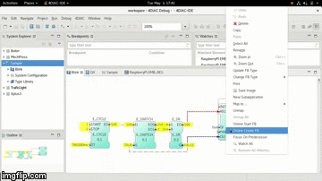

Archived note, written in 2017, while I was a research assistant at FOSSEE, IIT Bombay. Tools and versions have moved on since.
4DIAC
Open Source software framework for Distributed automation and control.
The tutorial contains chapters on setting up 4DIAC environment on a Linux PC, developing industrial applications, deploying applications, debugging instructions and few projects that FOSSEE is working on.
4DIAC is an open source framework to develop, deploy and visualize industrial applications for distributed automation and control.It is based on a new standard from IEC for Distributed systems called IEC61499.
IEC61499, a standard evolved from IED61131, focuses on applying function blocks in the design of distributed industrial process measurement and control systems. IEC 61499 includes advanced software technologies, such as the encapsulation of functionality, component-based design, event-driven execution, and distribution.
An IEC61499 system is proposed to have the following advantages over IEC61131 :
The following flow diagram shows how an application is developed, deployed and visualized using 4DIAC Framework. The 4DIAC framework consists of 4DIAC IDE and Forte Runtime. We will discuss it in more detail in chapter 1.
Chapters

Setting Up environment
Details on setting up 4DIAC on a Linux Machine and Forte on an Embedded resource

Functional Blocks and HW interface
Basic application to demonstrate usage of FB's and interface GPIO's in Raspberry Pi

Debugging
Debugging Perspective on 4DIAC.
HMI (not written)
HMI using FBRT.
Thanks to Milan Vathoopan and Dr. Alois Zoitl of Fortiss for providing technical support to make this documentation.